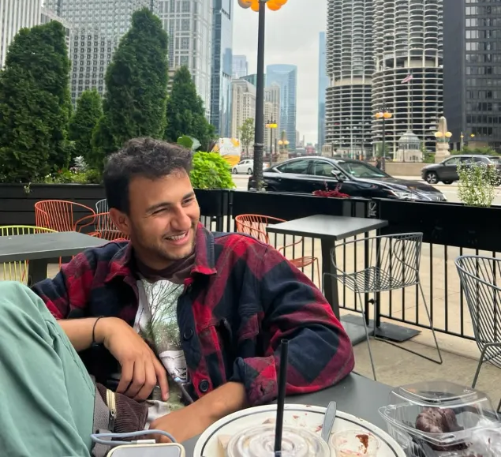
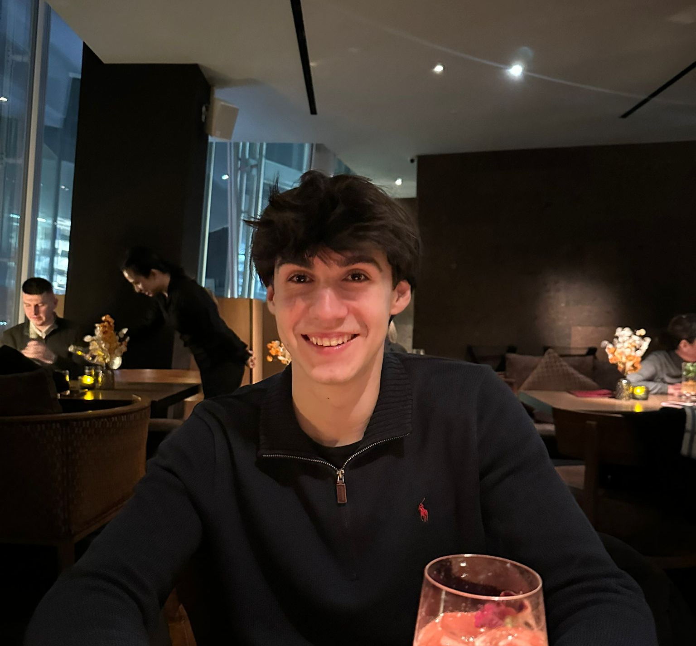

System Diagnostics
Look, we could give you a boring corporate pitch. Or we could just show you the raw telemetry of how our team actually functions during a sprint.
Meet The Team

Assaf Golan
Team Lead
Before moving to the Netherlands, I spent nearly three years leading technical operations in an Intelligence Special Operations unit. My background isn't just theoretical. I managed a team that built and maintained the infrastructure for 24/7 global intelligence ops. I care deeply about efficiency and mentorship, whether that means redesigning broken systems to massively boost output or running a 4-month technical bootcamp to train incoming recruits. Right now, I’m looking to combine that hands-on, high-stakes experience with my engineering studies to build reliable, high-impact software.

Diego Ferreira
Data & Algorithms
I have always been interested in puzzles and logic. Since an early age, I designed, developed and deployed full stack web and mobile applications (primarily, but not only, in the MERN framework), and participated in various national and international informatics olympiads, representing, and even winning a bronze medal for Portugal. I have since enrolled in TU Delft to further my education, and got two internship offers with BNY and Amazon. I am also very interested in Data Science & AI, which I have been extensively studying extracurricularly since the start of this academic year.
Vlad Manea
role
I'm a Computer Science student at TU Delft with a deep passion for problem solving and open-source development. Aside from open-source, I also have experience with building solutions for companies, such as the development of optimization tools for logistics activities and a performance tracking dashboard, both currently used internally at a French company. I'm constantly looking for opportunities to improve my skills and knowledge by making practical, efficient software in various fields and for different purposes.